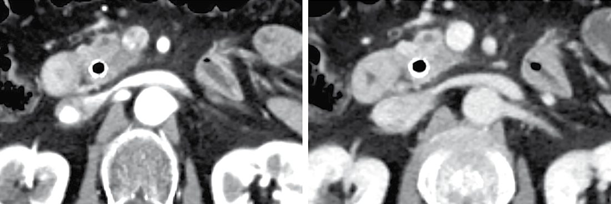
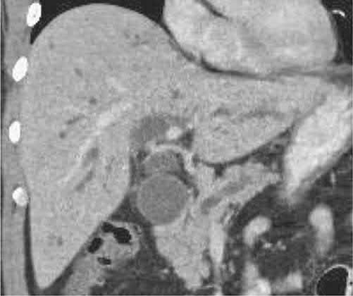
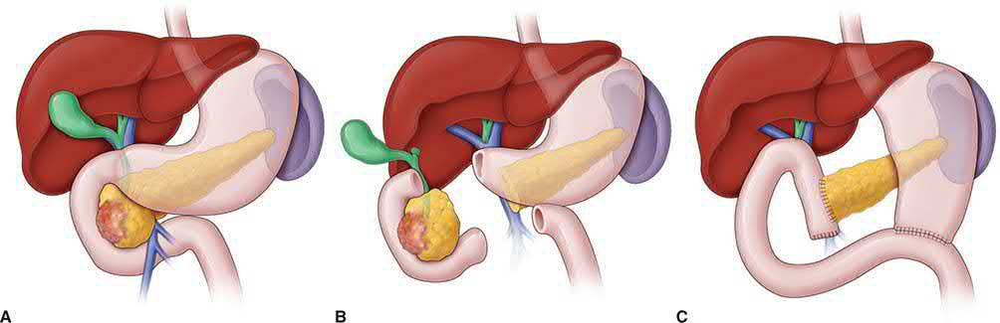
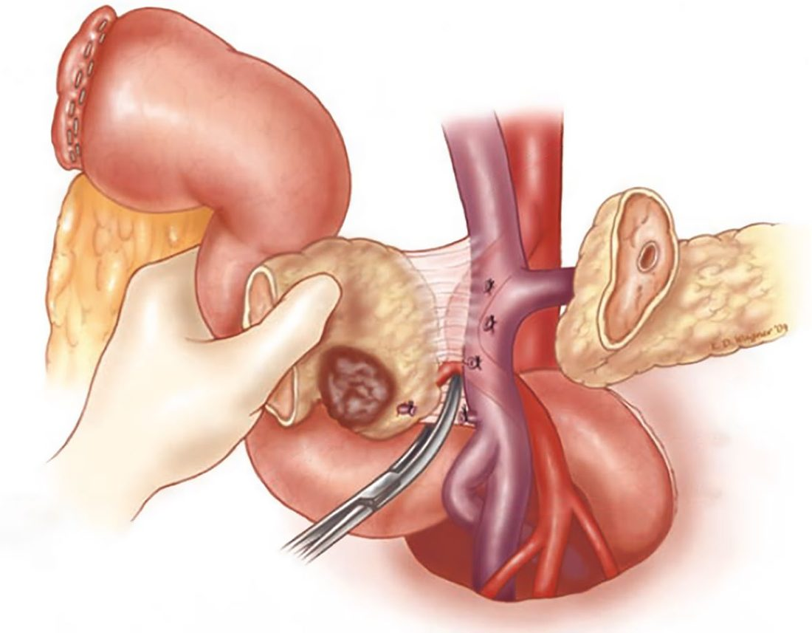

Pancreatic Cancer
Summary
- Pancreatic ductal adenocarcinoma (PDAC) is the third leading cause of cancer death in the United States, with a rapidly rising incidence and a poor overall prognosis, with an 11.5% 5-year survival rate across all stages [1].
- Over 80% of patients present with metastatic disease, and more than 95% of those affected ultimately die of the disease [1][2].
- Roughly 65% of tumours arise in the head of the pancreas, 15% in the body, 10% in the tail, and 10% multifocally, with 90% being adenocarcinoma [2]; the ABSITE Review gives 70% in the head, with adenocarcinoma representing over 90% of all pancreatic cancer and being ductal in 99% and acinar in 1% [3].
- Surgical resection combined with systemic (increasingly neoadjuvant) chemotherapy offers the only chance of cure, but this is possible in only 10–20% of patients [1][4].
Two NICE guidelines apply. NG12 sets the referral thresholds from primary care, and NG85 covers everything from the first pancreatic-protocol CT onwards, in nine sections, diagnosis, deciding and delivering care, staging, psychological support, pain management, nutritional management, relieving biliary and duodenal obstruction, managing resectable and borderline resectable disease, and managing unresectable disease [5][6].
NG85 puts the decision itself in one place: a specialist pancreatic cancer multidisciplinary team should make a shared decision with the person about the care that is needed, partnering with local cancer units to deliver it [5].
Definition
Pancreatic cancer most commonly refers to pancreatic ductal adenocarcinoma (PDAC), an invasive malignancy arising from the pancreatic ductal epithelium (or, per some models, from acinar cells undergoing ductal metaplasia), embedded in a dense desmoplastic stroma [1]. It arises via accumulation of somatic mutations through non-invasive precursor lesions, principally pancreatic intraepithelial neoplasia (PanIN), and less commonly intraductal papillary mucinous neoplasms (IPMN, <10% of PDAC) and mucinous cystic neoplasms (MCN) [1].
PDAC within the periampullary group
Periampullary adenocarcinomas are a set of neoplasms arising near the ampulla of Vater from the different mucosal tissues of the pancreatic duct, bile duct, ampulla and duodenum; they are discussed together because they share a common clinical presentation, are hard to distinguish on cross-sectional imaging, and when resectable are all treated by pancreaticoduodenectomy [7]. Pancreatic adenocarcinoma is by far the most common of the four; the others differ in resectability and long-term survival, which depend on the tissue of origin, stage at diagnosis, degree of differentiation, and ability to resect completely with negative margins [7].
| Periampullary cancer | Features |
|---|---|
| Pancreatic ductal adenocarcinoma | Most common; peak incidence in the seventh decade; higher risk in African Americans; slightly commoner in men; US lifetime risk 1 in 65 for men and 1 in 67 for women |
| Distal cholangiocarcinoma | Second commonest; about 30% of bile duct adenocarcinomas arise in the distal duct, between the cystic duct junction and the ampulla; a disease of the elderly, peak in the seventh decade; risk factors are sclerosing cholangitis, choledochal cysts, hepatolithiasis and liver flukes, all sharing long-term chronic inflammation |
| Ampullary adenocarcinoma | Third commonest; slightly commoner in males, peak in the seventh decade; causes obstructive jaundice early so is found smaller and at earlier stage, and is less biologically aggressive; histologic subtypes are pancreatic, biliary, intestinal and gastric, the intestinal subtype having a much better prognosis |
| Duodenal adenocarcinoma | Least common; equal in men and women, peak in the seventh decade; can arise from benign polyps, so familial adenomatous polyposis should be excluded, especially with multiple polyps; larger at diagnosis because symptoms appear only with significant intraluminal growth, but much better prognosis stage for stage |
Table reformats the descriptions of the four periampullary cancers [7]. Less common tumours arising in the same region include neuroendocrine tumours, acinar cell cancers, squamous cell carcinomas, gastrointestinal stromal tumours, lymphoma, and metastases from other sites [7].
Pathophysiology
- PDAC is defined molecularly by near-universal KRAS mutations (present in over 90% of cases, most commonly G12D and G12V), which impair intrinsic GTPase activity, locking KRAS in its active, GTP-bound state [1].
- Tumour-suppressor genes are also frequently mutated: TP53 (50–70%, impairing DNA damage recognition and cell-cycle arrest), CDKN2A (40–60%, disrupting CDK4/6 checkpoints), and SMAD4 (about one-third, affecting TGF-β signalling and associated with a higher likelihood of distant metastatic spread) [1].
- The ABSITE Review notes that 95% have a p16 mutation, a tumour suppressor that binds cyclin complexes [3].
- Large-scale chromosomal rearrangement ("chromothripsis") can drive accelerated malignant transformation [1].
- Transcriptomically, "classical" and "basal-like" molecular subtypes are recognised, the latter associated with more aggressive biology, worse prognosis, and poorer response to FOLFIRINOX-based chemotherapy [1].
- PDAC arises from microscopic PanIN lesions in the majority of cases (found in over 75% of sampled pancreata at autopsy, though most do not progress to cancer), and less often from IPMN or MCN, which are more often first identified as incidental cystic lesions on imaging [1].
- Over 50% of patients have metastatic disease at diagnosis, most commonly to liver and peritoneum [1].
- Spread is lymphatic first, and the liver is the commonest site of metastasis [3].
Clinical features
- Most PDACs arise in the pancreatic head, and the classic triad is jaundice, upper abdominal or back pain, and weight loss [1][2].
- Weight loss is the single commonest symptom [3].
- Jaundice from a head-of-pancreas tumour is typically painless and progressive, distinguishing it from the painful jaundice of choledocholithiasis, in which acute ductal distension activates pain fibres [8][9].
Why the diagnosis is made late
- Presenting symptoms are non-specific, which contributes to delay: by the time they are manifest, an estimated 80% of patients have metastatic or unresectable disease [7].
- The constellation that should prompt suspicion of a periampullary tumour is jaundice (painless or painful) with pruritus, acholic stools and tea-coloured urine in the absence of acute biliary disease; further questioning usually reveals vague pain and unintended weight loss, and a more severe, persistent mid-epigastric pain radiating to the back indicates a more advanced tumour [7].
- Malaise, fatigue, anorexia, indigestion and early satiety are common but non-specific; malabsorption with frequent fatty or floating stool suggests main pancreatic duct obstruction, while nausea and vomiting suggest gastric outlet or duodenal obstruction [7].
- A subtle but recognised sign is the rather sudden development of adult-onset diabetes in a previously healthy patient in their sixth decade [7].
- Up to 40% of patients present with new-onset pancreatogenic ("type 3c") diabetes in association with weight loss [1].
Browse's puts the pain in sharper relief: although many present with jaundice and weight loss, abdominal pain is the presenting symptom in more than half and occurs at some stage in over 90%; it is a continuous, dull, boring pain in the epigastrium radiating through to the back, often worse at night and relieved by sitting forward, radiating to the right hypochondrium with head tumours and to the left with infiltrating tumours of the tail [8]. Jaundice develops in almost 90% at some stage and is characteristically progressive but rarely painless; weight loss is almost universal, steatorrhoea, epigastric bloating, flatulence, diarrhoea, vomiting and constipation each occur in 20–30%, and 10% present with thrombophlebitis migrans [8].
Tumour location shapes the presentation. Body and tail tumours present later, with larger tumours contributing more abdominal pain and weight loss, whereas tumours within or adjacent to the distal bile duct present earlier as painless jaundice [7].
Physical signs
- Physical examination is often unremarkable, but a palpable, non-tender, distended gallbladder in a jaundiced patient (Courvoisier's sign) suggests malignant distal obstruction rather than gallstone disease, since chronic stone disease produces a thickened, non-distensible gallbladder [2][4].
- Palpable periumbilical or left supraclavicular (Virchow's) lymphadenopathy may indicate metastatic disease [1].
- Maingot's lists the full set: scleral icterus, jaundice and skin excoriation from pruritus and scratching; Courvoisier's sign without peritoneal signs; and in advanced disease cachexia, a palpable left supraclavicular node (Virchow node), a palpable periumbilical node (Sister Mary Joseph node), and palpable pelvic metastatic disease on rectal examination (Blumer shelf) [7].
- Obstructive jaundice with a palpable gallbladder and an enlarged liver indicates carcinoma of the head, but in the early stages physical signs are rarely present, and tumours of the body or tail often present late with the signs of distant metastases [8].
- Gastric outlet obstruction from local invasion may cause intractable nausea and vomiting [1].
- Patients with pancreatic cancer usually do not develop pancreatitis [3].
Etiology
- Approximately 10–15% of PDAC patients carry an identifiable germline pathogenic variant, including BRCA1, BRCA2, PALB2 (breast-ovarian cancer syndromes), CDKN2A (familial atypical mole and melanoma syndrome), STK11 (Peutz-Jeghers syndrome), and Lynch syndrome genes (MLH1, MSH2, MSH6) [1].
- Maingot's puts familial predisposition at up to 10%, with the genetic basis unidentified in the majority of those families, and names BRCA2, PRSS1, p16 and the HNPCC genes as known risk-raising mutations [7].
- Hereditary pancreatitis from PRSS1 mutations confers up to a 50% risk of PDAC by age 75, and inherited SPINK1-related pancreatitis confers up to 28% cumulative risk by age 70 [1].
- Acquired risk factors include tobacco use (1.74-fold increased odds), heavy alcohol consumption (1.60-fold), obesity (BMI >30, 1.72-fold), and diabetes mellitus, particularly new-onset diabetes with unexplained weight loss (adjusted hazard ratio 6.75) [1].
- Tobacco is the number one risk factor, with heavy alcohol use, chronic pancreatitis and high BMI also implicated [3]; smoking is one of the strongest risk factors and obesity, diabetes and alcohol have also been implicated [7].
- Chronic pancreatitis carries an estimated 4% lifetime risk of pancreatic cancer [2].
Diagnosis
- CT with a dedicated pancreatic protocol (thin-slice, late-arterial and portal-venous phases) is the preferred initial imaging study, assessing the primary tumour, its relationship to adjacent vasculature, and distant metastases [1][2].
- Maingot's specifies a dedicated fine-cut three-phase pancreas protocol scan, with MRI or MRCP as the substitute for patients with contrast allergy or renal insufficiency [7].
- CT should be obtained before any invasive endoscopic intervention because ERCP-related pancreatitis can cause peripancreatic inflammation that obscures true tumour-vessel relationships [1].
- Suggestive CT features of periampullary PDAC include a hypoenhancing pancreatic head mass, the "double duct sign" (dilation of both the common bile duct and main pancreatic duct), and distal pancreatic atrophy [1][3].
- In the absence of metastases the attention is on the local vasculature, the relationship of the tumour to the inferior vena cava, portal vein, superior mesenteric vein and artery, coeliac trunk and hepatic artery, and abutment or invasion of these vessels is not a direct contraindication to resection but makes the tumour borderline resectable, altering neoadjuvant planning and operative technique [7].
Tissue diagnosis
- Endoscopic ultrasound (EUS) with fine-needle aspiration is preferred over percutaneous CT-guided biopsy for tissue diagnosis (percutaneous biopsy carries up to a 16% risk of peritoneal tumour seeding) and allows same-session placement of a decompressive biliary stent [1].
- A patient with a resectable mass and no signs of metastatic disease does not need a biopsy, because the mass is being removed regardless; a biopsy is warranted where disease appears metastatic or neoadjuvant therapy is planned, in order to direct treatment [3].
- Maingot's frames the same point differently: biopsy confirmation is not always necessary for resectable lesions, but because treatment differs so much for neuroendocrine tumours, lymphomas and other tumours occurring in the same region, biopsy is often warranted [7].
At endoscopic retrograde cholangiography, distal bile duct tumours show an abrupt rather than smoothly tapered cutoff, and the double duct sign (dilation of both extrahepatic common bile duct and pancreatic duct) is most often a sign of malignancy; ERC also permits brushings or biopsy, and if that is non-diagnostic, EUS-FNA or direct cholangioscopy-guided biopsy may follow [7].
Tumour markers
- CA 19-9 is elevated in about 75–80% of patients at diagnosis (sensitivity ~70%, specificity ~90%), but is falsely elevated with hyperbilirubinaemia (only interpretable reliably below a bilirubin of 2 mg/dL) and in benign biliary disease and other cancers, so it is not used for screening but is useful for monitoring treatment response and detecting recurrence [1][2][3].
- Two further limitations matter.
- The assay depends on the Lewis blood group antigen phenotype and is undetectable in patients with the Lewis AB-negative phenotype, roughly 5% to 10% of the population; and biliary obstruction artificially elevates it, so it becomes reliable only after the obstruction is relieved and bilirubin normalises [7].
- Inflammation, cholangitis and non-pancreatic gastrointestinal and ovarian tumours also raise it, so CA 19-9 can support the diagnosis but should never be used to infer it [7].
Extrahepatic biliary obstruction typically raises the direct more than the indirect bilirubin and raises alkaline phosphatase more than the transaminases; prothrombin time or INR may be abnormal from malabsorption of vitamin K, and hypoalbuminaemia from malabsorption and weight loss may be present [7].
Staging laparoscopy and PET
- Staging laparoscopy is used selectively before planned resection, as up to 10% of patients harbour small-volume metastatic disease not detected on preoperative imaging [1][2].
- Practice varies widely: proponents argue it spares some patients the morbidity of a non-therapeutic laparotomy, opponents that improved cross-sectional imaging has reduced occult metastasis and the extra cost and theatre time are not justified, most high-volume centres take a selective approach, since the likelihood of finding metastatic disease is greater with larger body and tail tumours and with a markedly elevated CA 19-9 above 200 U/mL [7].
- Despite improved imaging including PET-CT, small subcapsular liver nodules or occult peritoneal implants are still found in approximately 10% to 20% of patients who meet operative criteria [7].
- PET-CT's routine use is common but debated: it lacks the resolution and fine detail around the vasculature to obviate a pancreas-protocol contrast CT, but is useful for resolving suspicious potentially metastatic lesions seen on other modalities [7].
- EUS can also help define lymph node and vascular involvement, and MRCP distinguishes ducts dilated by chronic pancreatitis from those dilated by cancer, cancer showing irregular narrowing, displacement and destruction of the duct [3].


- NG12 gives two triggers from primary care.
- Refer people using a suspected cancer pathway referral for pancreatic cancer if they are aged 40 and over and have jaundice [6].
- And consider an urgent direct-access CT scan (or an urgent direct-access ultrasound if CT is not available) to assess for pancreatic cancer in people aged 60 and over with weight loss and any of: diarrhoea, back pain, abdominal pain, nausea, vomiting, constipation, or new-onset diabetes [6].
NG85 then splits the diagnostic pathway by presentation, which is the clearest way to remember it.
| Presentation | NICE NG85 pathway |
|---|---|
| Obstructive jaundice with suspected pancreatic cancer | Pancreatic protocol CT before draining the bile duct (1.1.1); if still unclear, FDG-PET/CT and/or EUS with EUS-guided tissue sampling (1.1.2); take a biliary brushing for cytology if ERCP is being used to relieve the obstruction and there is no tissue diagnosis (1.1.3) |
| Pancreatic abnormalities on imaging without jaundice | Pancreatic protocol CT (1.1.4); if still unclear, FDG-PET/CT and/or EUS with tissue sampling (1.1.5); where cytological or histological samples are needed, EUS with EUS-guided tissue sampling (1.1.6) |
| Pancreatic cysts | Pancreatic protocol CT or MRI/MRCP (1.1.7), then whichever was not done if more information is needed (1.1.8); EUS after CT and MRI/MRCP if more information on the likelihood of malignancy is needed or it is unclear whether surgery is needed (1.1.10) |
Table reformats the diagnostic recommendations [5].
CT comes before the stent. NICE 1.1.1 makes the pancreatic protocol CT precede biliary drainage, for the same reason the textbooks give, post-intervention inflammation obscures the tumour-vessel relationships that determine resectability [5].
For cysts, three features mandate referral for resection: obstructive jaundice with cystic lesions in the head of the pancreas; an enhancing solid component within the cyst; and a main pancreatic duct of 10 mm diameter or larger [5]. Fine-needle aspiration during EUS is considered where more information on the likelihood of malignancy is needed, and where FNA is used a carcinoembryonic antigen assay should be performed in addition to cytology if there is sufficient sample [5].
- Surveillance of high-risk groups is offered, not merely considered, for three categories.
- Offer surveillance to people with hereditary pancreatitis and a PRSS1 mutation; to people with BRCA1, BRCA2, PALB2 or CDKN2A (p16) mutations who have one or more first-degree relatives with pancreatic cancer; and to people with Peutz-Jeghers syndrome [5].
- Consider surveillance for people with two or more first-degree relatives with pancreatic cancer across two or more generations, and for people with Lynch syndrome (MLH1, MSH2, MSH6 or PMS2 mutations) and any first-degree relative with pancreatic cancer [5].
- Ask people with pancreatic cancer whether any first-degree relative has had it, and address any concerns about inherited risk [5].
The surveillance modality is chosen by whether hereditary pancreatitis is present, and this produces a prohibition worth remembering. Consider MRI/MRCP or EUS for surveillance in people without hereditary pancreatitis; consider a pancreatic protocol CT scan in people with hereditary pancreatitis and a PRSS1 mutation; and do not offer EUS to detect pancreatic cancer in people with hereditary pancreatitis [5].
On staging, offer a pancreatic protocol CT including chest, abdomen and pelvis to anyone newly diagnosed who has not had one; offer FDG-PET/CT to people with localised disease on CT who will be having surgery, radiotherapy or systemic therapy; and if more information is needed, consider MRI for suspected liver metastases, EUS for tumour and node staging, or laparoscopy with laparoscopic ultrasound for suspected small-volume peritoneal or liver metastases where resectional surgery is possible [5].
Scoring and Severity
- Clinical staging is dichotomised into potentially operable (resectable and borderline resectable) versus likely inoperable (locally advanced and metastatic) disease, based on the tumour's relationship to the superior mesenteric artery (SMA), coeliac axis, common hepatic artery (CHA) and superior mesenteric vein/portal vein (SMV/PV) confluence [1]. Resectable disease shows no arterial abutment (defined as tumour contact ≤180° of vessel circumference) of the SMA, coeliac axis or CHA, and no or limited SMV/PV abutment. Borderline resectable disease shows abutment (≤180°) of the SMA, coeliac axis, or a short segment of the CHA, or SMV/PV involvement amenable to reconstruction. Locally advanced disease shows arterial encasement (>180° of circumference) of the coeliac axis or SMA, or unreconstructable SMV/PV occlusion. Metastatic disease is defined by extrapancreatic spread [1].
- This SMA/coeliac/CHA/SMV-PV-based framework, while its precise cut-offs vary slightly between the NCCN, AHPBA/SSO/SSAT, and MD Anderson/Medical College of Wisconsin systems, underpins the multidisciplinary decision to proceed to upfront surgery, neoadjuvant therapy, or palliative treatment [1].
- Oxford Handbook's TNM-based staging groups (Stages I–II resectable, Stage III locally advanced, Stage IV metastatic) map onto this same resectability framework for treatment planning [2].
The ABSITE Review lists the features that define unresectable disease directly: invasion of the retroperitoneum; unreconstructable portal vein or SMV involvement; more than 180 degrees of contact with the SMA or coeliac artery; metastases to peritoneum, omentum, liver or other distant sites; and metastases to coeliac or SMA nodal systems, that is nodal systems outside the area of resection [3]. Most cures are achieved in patients with pancreatic head disease [3].
Treatment and Management
- Given that over 75% of patients who undergo upfront surgery develop recurrent disease within a year, and 70% harbour node-positive disease with 40% having margin-positive resections if operated on immediately, a multimodality approach with either neoadjuvant or adjuvant systemic therapy is standard [1].
- Adjuvant chemotherapy (e.g. the PRODIGE-24 trial's modified FOLFIRINOX regimen) improves survival after resection but is only actually delivered to about 50% of resected patients due to postoperative complications or delayed recovery [1].
- Neoadjuvant therapy is increasingly favoured, particularly for borderline resectable disease, as it treats presumed micrometastatic disease early, allows assessment of tumour biology and treatment response, and improves patient selection for surgery; the PREOPANC trial demonstrated improved 5-year overall survival with perioperative therapy versus surgery-first (20.5% vs 6.5%) [1].
- For locally advanced adenocarcinoma Maingot's likewise favours a neoadjuvant approach, both to test the biology of the tumour and to attempt downstaging before considering resection [7].
- Adjuvant capecitabine, established by the BILCAP trial, is standard following resection of biliary tract cancers including distal cholangiocarcinoma but the pancreatic-specific regimen is chemotherapy per protocols above [9].
Whether to stent before surgery
- The need for biliary stenting depends on staging, condition, and the timing of any resection.
- Patients with metastatic or locally advanced tumours benefit from stenting, and the relief of pruritus, malabsorption, icterus and stool colour change is welcome even if it takes days to weeks depending on the degree of acquired liver dysfunction [7].
- For resectable disease, routine preoperative stenting is controversial: a prospective randomised trial in patients with a total bilirubin of 2.3 to 14.6 mg/dL found routine preoperative stenting was associated with an increase in serious complications, with no change in mortality or length of stay, compared with going straight to surgery within 7 days of diagnosis [7].
- Selected patients with resectable tumours may still benefit if they have cholangitis, intractable pruritus, significant nutritional deficiency, or if surgery cannot be arranged within 7 days [7].
- Unresectable, locally advanced disease is managed with gemcitabine-based combination chemotherapy, ERCP with self-expanding metal stent placement for biliary decompression, and consideration of consolidation radiotherapy [2].
- Metastatic disease is managed with palliative intent: ERCP biliary stenting, surgical or endoscopic gastrojejunostomy for gastric outlet obstruction, palliative gemcitabine-based chemotherapy, and pain control via the analgesic ladder, coeliac plexus block/neurolysis, or splanchnicectomy [2].
- Palliative stenting is used for unresectable disease, and liver transplantation is not an option for cholangiocarcinoma [10].
- NICE takes a position on preoperative biliary drainage that is stronger than the textbooks': offer resectional surgery rather than preoperative biliary drainage to people who have resectable pancreatic cancer and obstructive jaundice, are well enough for the procedure, and are not enrolled in a clinical trial that requires preoperative drainage [5].
- Where drainage is nonetheless needed because the person is not yet fit for resection, offer endoscopically placed self-expanding metal stents; where the stent may need removing later, consider fully covered metal stents; and for unresectable disease offer endoscopically placed self-expanding metal stents rather than surgical biliary bypass [5].
- During an attempted resection, if the cancer is found to be unresectable, consider surgical biliary bypass, and for head of pancreas cancer, consider a prophylactic gastrojejunostomy [5].
- Symptomatic duodenal obstruction from unresectable disease should be relieved if possible, and when choosing between gastrojejunostomy and duodenal stent, consider gastrojejunostomy for people with a more favourable prognosis [5].
- Neoadjuvant therapy is restricted to trials.
- Only consider neoadjuvant therapy for people with borderline resectable pancreatic cancer as part of a clinical trial, and only consider it for people with resectable disease as part of a clinical trial [5].
- This is the sharpest divergence on this page: the North American texts describe a shift toward neoadjuvant therapy as standard for borderline resectable disease and cite PREOPANC in its favour, while NG85 as published in 2018 confines it to research.
Adjuvant therapy is a positive offer with a specific regimen and a specific timing rule: start adjuvant therapy once the person has had time to recover from surgery and as soon as they are well enough to tolerate all 6 cycles; offer adjuvant gemcitabine plus capecitabine to people who have had sufficient time to recover after resection; and consider adjuvant gemcitabine alone for those not well enough for combination chemotherapy [5].
- For unresectable disease NICE separates locally advanced from metastatic.
- Locally advanced: offer systemic combination chemotherapy to those well enough to tolerate it, consider gemcitabine for those who are not, and when using chemoradiotherapy consider capecitabine as the radiosensitiser [5].
- Metastatic, first line: offer FOLFIRINOX to people with an ECOG performance status of 0 to 1; consider gemcitabine combination therapy for those not well enough for FOLFIRINOX; and offer gemcitabine to those not well enough for any combination chemotherapy [5].
- Second line: consider oxaliplatin-based chemotherapy for people who have not had first-line oxaliplatin, and gemcitabine-based chemotherapy for those whose cancer has progressed after first-line FOLFIRINOX [5].
- On supportive care, NICE makes three recommendations that have no textbook counterpart.
- Throughout the person's care, assess the psychological impact of fatigue, pain, gastrointestinal symptoms including changes to appetite, nutrition, anxiety and depression [5].
- For pain, consider EUS-guided or image-guided percutaneous neurolytic coeliac plexus block for people with uncontrolled pancreatic pain, unacceptable opioid adverse effects, or escalating analgesic doses, but do not offer thoracic splanchnicectomy to people with pancreatic cancer [5].
- On nutrition, offer enteric-coated pancreatin for unresectable disease and consider it before and after resection; do not offer fish oils as a nutritional intervention to manage weight loss in unresectable disease; and for people who have had pancreatoduodenectomy and have a functioning gut, offer early enteral nutrition, including oral and tube feeding, rather than parenteral nutrition [5].
Surgeries
- Pancreaticoduodenectomy (Whipple procedure) is the standard operation for resectable tumours of the pancreatic head, removing the pancreatic head, duodenum, gallbladder and bile duct, with or without the gastric antrum [1][4].
- Diagnostic laparoscopy is performed first to exclude small-volume metastatic disease [1].
- The operation proceeds through mobilisation and antrectomy/duodenal transection, division of the jejunum with mobilisation of the ligament of Treitz, and finally separation of the pancreatic head from the SMV/portal vein and SMA, with individual ligation of the inferior pancreaticoduodenal arteries to minimise the risk of postoperative haemorrhage [1].
Assessing resectability before committing
- Maingot's structures the operation around two surveys.
- The primary survey explores the entire abdomen for occult metastatic disease, paying particular attention to the liver, omentum, peritoneal surfaces and base of the transverse mesocolon.
- The secondary survey assesses the tumour's involvement with the adjacent mesenteric vessels, in a consistent and systematic sequence to reduce variability [7].
- A Kocher manoeuvre assesses the relationship of the tumour to the SMA and to retroperitoneal structures including the inferior vena cava, right renal vein and aorta; the SMV is then located behind the neck of the pancreas, lifting the transverse mesocolon and following the middle colic vein to its junction with the SMV is a useful manoeuvre, and a tunnel cleared by gentle blunt dissection [7].
- The portal vein is assessed from above only after the common hepatic artery is confirmed free of tumour; tracing that artery leads to the gastroduodenal artery, which is dissected near its origin and test-clamped to confirm adequate hepatic arterial flow before division, after which the tunnel above the neck is connected with the one below [7].
The point of that sequence is that at its completion the surgeon can judge the chance of a margin-negative resection, with or without vascular reconstruction, and the procedure can still be abandoned, because no enteric structure has yet been divided [7].
Resection and reconstruction
- Once committed, a cholecystectomy is performed and the common bile duct divided around the level of the cystic duct insertion; the choice between pylorus-preserving and classic Whipple turns on local tumour extent and surgeon preference, the duodenum being divided 1 to 2 cm beyond the pylorus if the tumour is well away from it, or the stomach divided to include the antrum if the tumour encroaches [7].
- Hemostatic stay sutures along the superior and inferior edges of the pancreatic neck control bleeding, provide retraction and expose the SMV; the neck is divided sharply so the main duct can be identified, and a frozen section of the pancreatic duct margin is sent early so that further pancreatic margin can be taken before reconstruction begins [7].
- Extensive periaortic and vena caval lymph node dissections are unnecessary, having not been shown to improve survival, and careful examination of the retroperitoneal margin is of crucial importance [7].
- Venous resection of the SMV/PV confluence may be required if the tumour precludes safe separation, generally using an autologous vein graft (e.g. internal jugular vein) if a tension-free primary anastomosis is not possible; major arterial resection remains controversial and is reserved for highly selected patients after extensive neoadjuvant therapy [1].
- Reconstruction proceeds with a pancreaticojejunostomy, then hepaticojejunostomy, then an antecolic gastrojejunostomy or duodenojejunostomy, positioned at least 50 cm from the hepaticojejunostomy to minimise bile-reflux cholangitis [1].
- Maingot's sets the hepaticojejunostomy 5 to 10 cm from the pancreaticojejunostomy and the gastric or duodenal anastomosis 20 to 25 cm downstream of the biliary one, and notes that although routine pancreatic duct stenting has not been shown to reduce fistula rates, a trimmed pediatric feeding tube may be fixed across the anastomosis in patients with a soft gland or small duct, passing unnoticed in the stool weeks later [7].
- Closed suction drains are placed around the pancreatic and biliary anastomoses, since biliary and pancreatic fistulae account for much of the morbidity and mortality of the operation [7].
Distal pancreatectomy
- For body/tail tumours, laparoscopic or open distal pancreatectomy, with or without splenectomy, is performed [2].
- For adenocarcinoma, distal pancreatectomy with splenectomy is the preferred approach; spleen preservation is considered only for benign conditions or very small neuroendocrine tumours [7].
- The argument for taking the spleen is threefold: it simplifies the procedure, it reduces the risk of significant bleeding from the tedious dissection of the splenic vessels along the pancreas, and for adenocarcinoma and larger neuroendocrine tumours it improves removal of prognostically relevant regional peripancreatic nodes, while the risk of post-splenectomy sepsis in adults is low and further mitigated by vaccination against pneumococcus, Haemophilus and meningococcus [7].
- Three technical points define the operation.
- The inferior mesenteric vein must be identified and preserved where it enters the splenic vein posteriorly near the SMV–splenic vein junction.
- Tumours of the body and neck often track along the splenic artery, so a clear margin at its take-off from the coeliac trunk must be assured; the artery is encircled, test-clamped to confirm adequate hepatic flow, and intentionally divided first to reduce blood loss
- And management of the pancreatic stump remains controversial, stapler, electrocautery, harmonic scalpel, direct oversewing of the duct, or buttressed compression sutures have all been used without any one technique reproducibly reducing fistula, which occurs in 20% to 30%, so a drain is left adjacent to the stump [7].
Minimally invasive (laparoscopic or robotic) pancreaticoduodenectomy is increasingly used, with a substantial learning curve (roughly 80 cases for proficiency) but reduced pain, wound complications and length of stay in appropriately selected patients [1].
Palliative operations
- Where metastatic or unresectable disease is found at exploration, the additional operative morbidity and mortality must be balanced against life expectancy and the more durable palliation achieved surgically [7].
- For a relatively low tumour burden with distal bile duct obstruction, an end-to-side Roux-en-Y hepaticojejunostomy gives the most durable relief of biliary obstruction [7].
- The decision on gastric outlet obstruction is harder, because the vague symptoms of pancreatic head tumours do not necessarily mean mechanical obstruction and the published need for intervention ranges widely from 3% to 20%; an antecolic loop gastrojejunostomy suffices to let patients eat again [7].
- A third option is chemical splanchnicectomy at the time of open operation: the coeliac trunk is palpated and 20 mL of 50% ethanol injected along either side of the aorta at the level of the coeliac plexus with a spinal needle, a prospective randomised trial against saline having shown superior pain control at 2 to 6 months in the ethanol group [7].


- Two operative recommendations, both framed as "consider" rather than "offer".
- For people having surgery for head of pancreas cancer, consider pylorus-preserving resection if the tumour can be adequately resected [5].
- And consider standard lymphadenectomy rather than extended lymphadenectomy for people having head of pancreas resection [5], the same conclusion Maingot's reaches from the survival data.
After resection, offer ongoing specialist assessment and care to identify and manage any problems resulting from surgery, and provide access to specialist investigation and support services for people with new, unexplained or unresolved symptoms after treatment [5].
Complications
The most common complications after pancreaticoduodenectomy are pancreatic fistula (10–30%) and delayed gastric emptying (10–15%); postpancreatectomy haemorrhage is less common (~5%) but carries the highest mortality [1]. Maingot's gives a fistula rate of 10% to 25% after partial pancreatectomy and a delayed gastric emptying rate ranging from 19% to 57% across reports [11].
Pancreatic fistula
- The International Study Group of Pancreatic Surgery (ISGPS) grades postoperative pancreatic fistula as biochemical leak (elevated amylase without clinical consequence), Grade B (requiring a change in management, e.g. prolonged drainage, antibiotics, or percutaneous/angiographic intervention), or Grade C (requiring reoperation, causing organ failure or death) [12].
- The commonest presentation is a change in the character of the drain effluent (no longer serosanguinous but cloudy or completely clear) with some patients showing prolonged ileus, leukocytosis and fever, or a significant inflammatory response with tachycardia, renal dysfunction and confusion; the surgeon should check the drain character each postoperative day [11].
- The widely used diagnostic criterion is drain output of any measurable volume on or after postoperative day 3 with an amylase content greater than three times the upper limit of normal serum amylase [11].
- The texture of the pancreas is the most important risk factor.
- A soft pancreas does not hold suture or staples well and the local inflammatory process can disrupt them; soft glands are found in patients with neuroendocrine tumours, ampullary tumours and cystic lesions.
- Conversely, chronic pancreatitis makes the gland firm and fibrotic, so its fistula rate is relatively low, and pancreatic cancer likewise produces a fibrotic pancreas with a lower fistula rate [11].
- Other risk factors are pancreatic duct diameter and intraoperative blood loss [11].
- Treatment is mostly conservative, and 70% to 82% of pancreatic fistulae resolve within weeks with conservative management, after both pancreaticoduodenectomy and distal pancreatectomy [11].
- A biochemical leak, the commonest form, still permits oral feeding and requires neither parenteral nutrition nor octreotide, rarely delaying discharge.
- A grade B fistula may require nil-by-mouth, parenteral nutrition, octreotide if the volume is significant, and antibiotics if there is fever or leukocytosis, with interventional drainage or angiographic embolisation for haemorrhage, though the patient can often go home with the drain in place.
- A grade C fistula requires nil-by-mouth, parenteral nutrition, intravenous antibiotics, somatostatin analogue and intensive care, with reoperation to repair or revise the anastomosis if deterioration continues, and completion pancreatectomy in extremis [11].
- Neither pancreatic duct stents nor fibrin sealants have been proven to significantly reduce pancreatic leak rates in randomised trials [13].
- Maingot's confirms the fibrin glue result, one early trial reported no fistula in 15 patients, but later reports consistently failed to show benefit, one series of 125 patients finding fistula in 26% of the fibrin-glue group against 30% of controls [11].
- One pharmacological approach did work: in a double-blinded randomised trial, pasireotide (a somatostatin analogue with a longer half-life and better binding than octreotide) given subcutaneously twice daily for 7 days after pancreatectomy significantly reduced pancreatic fistula against placebo (9% vs 21%) [11].
Pancreatic fistulae in general mostly close spontaneously, especially at low output below 200 cc/day; treatment is drainage, nil-by-mouth, parenteral nutrition and octreotide, with ERCP, sphincterotomy and pancreatic stent placement if medical management fails, and it is unusual to have to operate [3].
Delayed gastric emptying and haemorrhage
- Delayed gastric emptying is graded by nasogastric tube requirement and duration of oral intolerance; antecolic (versus retrocolic) gastrojejunostomy is associated with a lower incidence [1].
- It is characterised by oral intolerance, inability to remove the nasogastric tube, or the need to reinsert it several days postoperatively, and it delays recovery, nutritional improvement and the start of adjuvant therapy [11].
- Its mechanism is largely unknown, but resection of the duodenum has been postulated as the trigger, supported by the lower rate after duodenum-preserving pancreatic head resection and the rarity of the problem after distal pancreatectomy, which does not involve duodenal resection, with a decreased motilin level also suggested [11].
Postpancreatectomy haemorrhage is classified as early (within 24 hours, usually from a technical hemostatic failure requiring reoperation) or late (typically day 7–14 or later, most often from an eroding pseudoaneurysm associated with a pancreatic leak, or a gastrojejunostomy ulcer), managed with endovascular embolisation or stenting where possible [1].
Prognosis
- Overall 5-year survival across all stages of PDAC is approximately 11.5%, and over 95% of affected patients eventually die of the disease [1][2].
- Median overall survival with a completed neoadjuvant-and-surgery approach can exceed 40 months at high-volume centres in single-institution series, and the PREOPANC trial demonstrated a 5-year overall survival of 20.5% with perioperative therapy compared with 6.5% for surgery-first [1].
- CA 19-9 normalisation after neoadjuvant therapy and resection correlates with improved prognosis [1].
- Prognosis is markedly worse in metastatic and unresectable locally advanced disease, where median survival with palliative chemotherapy is measured in months [2].
- Long-term survival across the periampullary group depends on the tissue of origin, stage at diagnosis, degree of differentiation, and the ability to achieve a complete resection with negative margins, with duodenal and ampullary tumours faring considerably better stage for stage than pancreatic and biliary adenocarcinomas [7].
References
- Sabiston Textbook of Surgery, 22nd ed., Ch. 93
- Oxford Handbook of Clinical Surgery, 5th ed., Ch. 9
- The ABSITE Review, 2022, Ch. Pancreas
- Bailey & Love's Short Practice of Surgery, 28th ed., Ch. 71, as a comparable figure for cholangiocarcinoma
- NICE Guideline NG85: Pancreatic cancer in adults: diagnosis and management (2018), 1.1 to 1.9; 1.1.1; 1.1.1, 1.1.2, 1.1.3, 1.1.4, 1.1.5, 1.1.6, 1.1.7, 1.1.8, 1.1.10; 1.1.9; 1.1.11, 1.1.12; 1.1.14; 1.1.15; 1.1.16; 1.1.17, 1.1.18, 1.1.19; 1.2.1, 1.2.2; 1.3.1, 1.3.2, 1.3.3; 1.4.1; 1.5.1, 1.5.2; 1.6.1, 1.6.2, 1.6.3, 1.6.4; 1.7.1; 1.7.2, 1.7.6; 1.7.3, 1.7.4, 1.7.5; 1.7.7, 1.7.8; 1.8.1, 1.8.2; 1.8.3; 1.8.4; 1.8.5, 1.8.6, 1.8.7; 1.8.8, 1.8.9; 1.9.1, 1.9.2, 1.9.3; 1.9.4, 1.9.5, 1.9.6; 1.9.7, 1.9.8 www.nice.org.uk
- NICE Guideline NG12: Suspected cancer: recognition and referral (2015, updated 2026), 1.2.4; 1.2.4, 1.2.5; 1.2.5 www.nice.org.uk
- Maingot's Abdominal Operations, 13th ed., Ch. 73, Cancers of the Periampullary Region and Pancreas
- Browse's Introduction to the Symptoms and Signs of Surgical Disease, 6th ed., Ch. 15
- Sabiston Textbook of Surgery, 22nd ed., Ch. 88, cross-reference for biliary cancers
- The ABSITE Review, 2022, Ch. Biliary System
- Maingot's Abdominal Operations, 13th ed., Ch. 76, Complications of Pancreatectomy
- Sabiston Textbook of Surgery, 22nd ed., Ch. 92/93
- Schwartz's Principles of Surgery: ABSITE and Board Review, Ch. 33